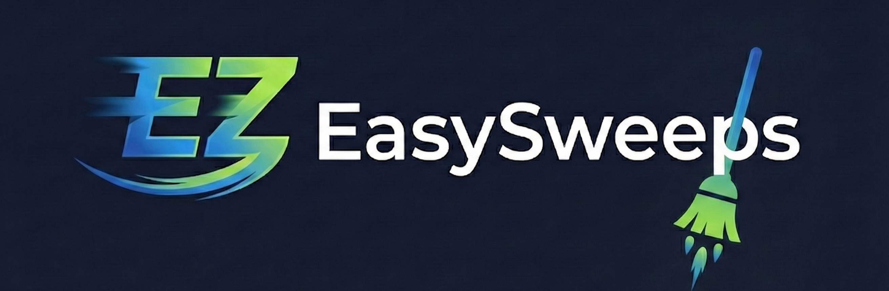

Home



Watch EasySweeps quick usage video¶

Why EasySweeps?¶
W&B is great for experiment tracking, but managing sweeps at scale has pain points:
- Repetitive setup – Launching sweeps across datasets requires manual duplication
- Limited agent control – No built-in way to stop agents by GPU or sweep
- Manual management – Multi-GPU sweep orchestration requires custom scripts
EasySweeps solves these by providing simple commands to create, launch, monitor, and manage sweep agents.
Installation¶
Requirements: Python 3.7+, W&B account, CUDA GPUs (optional)
Quick Start¶
# Initialize project structure
ez init
# Create sweeps from the template and variant in the "sweeps" directory
ez sweep
# Launch agents
ez agent <SWEEP_ID> --gpu-list 0 1 2
# Monitor status of sweeps and agents
ez status
# Kill agents on specific GPU
ez kill --sweep <SWEEP_ID> --gpu <gpu-number>
Configuration¶
After running ez init a file named ez_config.yaml is built.
This file defines the structure of your project:
sweep_dir: "sweeps" # Directory for sweep template and variants files
agent_log_dir: "agent_logs" # Directory for agent logs
entity: "your_entity" # W&B entity (null = current user logged in to wandb)
project: "your_project" # W&B project name
Commands¶
ez init¶
Scaffolds project structure with config file and example templates.
ez sweep¶
Creates W&B sweeps from a template and variants file.
The folder with the template and variants files is configured in the ez_config.yaml file.
Why Templates & Variants?
When running hyperparameter sweeps across multiple datasets or environments, you often want: - Separate sweeps per dataset – Avoid mixing data from different distributions, which can skew optimization - Shared hyperparameter configurations – Reuse the same search space and method across datasets - DRY principle – Maintain one template instead of duplicating configs for each dataset
For example, if optimizing learning rate and batch size for both MNIST and CIFAR-10, you don't want the optimizer to see loss data from both datasets together. Instead, EasySweeps creates isolated sweeps for each dataset using the same hyperparameter template.
Template (sweeps/sweep_template.yaml):
name: "example_{dataset}" # Will create one sweep per dataset
method: "grid"
metric:
name: "loss"
goal: "minimize"
parameters:
learning_rate:
values: [0.001, 0.01]
dataset:
value: None # Replaced by variants
program: "train.py"
Variants (sweeps/sweep_variants.yaml):
ez agent¶
Launches sweep agents on specified GPUs as systemd scope units.
ez agent # List available sweeps
ez agent abc123 --gpu-list 0 1 2 # Launch on GPUs 0,1,2
ez agent abc123 --gpu-list 0 --agents-per-sweep 3 # 3 agents on GPU 0
ez status¶
Shows all sweeps and running agents with GPU assignments and runtime.
ez kill¶
Stops running agents with flexible targeting.
ez kill # List active sweeps
ez kill --force # Kill all agents
ez kill --gpu 0 # Kill agents on GPU 0
ez kill --sweep abc123 # Kill agents for specific sweep
ez kill --sweep abc123 --gpu 0 # Target specific sweep + GPU
Examples¶
How to use examples:
Contributors ✨¶
EasySweeps is built and maintained by:
 Yaniv Galron 💻 🔌 |
 Ron Tohar 💻 🔌 |
|---|---|
License¶
MIT License - see LICENSE for details.
⭐ If you find this helpful, a star would be appreciated!